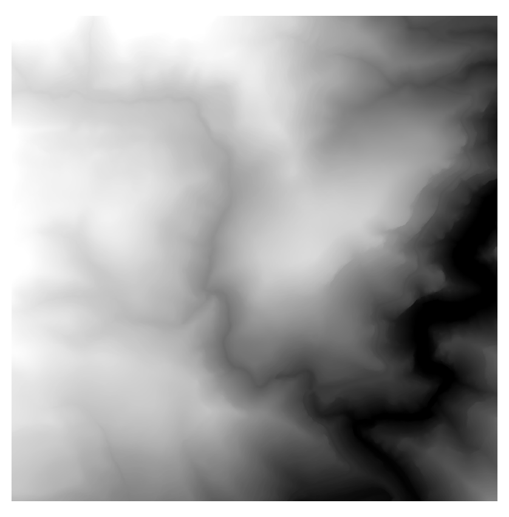

Cálculo del Modelo Digital de Elevaciones (MDE)
Una vez se dispone de los archivos LAS clasificados se genera el Modelo Digital de Elevaciones (MDE).
El modelo utiliza los últimos ecos del pulso láser y genera una superficie del suelo desnudo.
Se utiliza la herramienta 'GridSurfaceCreate' implementada en Fusion Lidar ToolKit (LTK) (McGaughey, 2012) para generar una malla regular de datos que representan el terreno en formato ráster.
Esta herramienta determina la elevación de cada celda de la malla calculando la media de todos los puntos LiDAR clasificados como terreno dentro de la celda.
En el caso de que la celda no contenga ningún punto, genera un dato por interpolación, a partir de las celdas vecinas.
Se define un tamaño de celda de 1, unidades en metros y el sistema de coordenadas UTM (que se corresponde con el código 1) en la zona 30, los archivos de entrada en formato LAS:
-
Se convierte a formato LAS con el comando siguiente:
las2las [directory][file-name].laz -olasGridSurfaceCreate [switches] surfacefile cellsize xyunits zunits coordsys zone horizdatum vertdatum datafileGridSurfaceCreate /class:2 [surfacefile].dtm 1 m m 1 30 0 0 [directory][file-name].las
-
Se convierte a formato ASCII (.asc) con el comando
dtm2ascii:dtm2ascii [directory][file-name].dtm [file-name].asc
